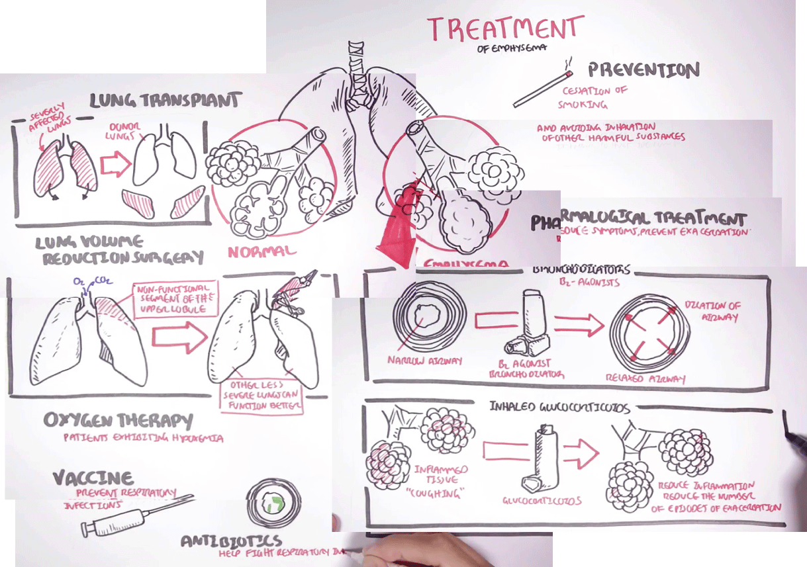
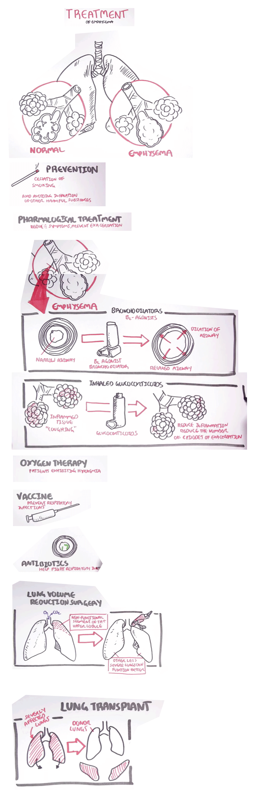

Main page
Highlighting points of interest: detect parts of the frame that is new
Manullay pick out keyframes
Iterate through images while:
For all objects in set, do feature matching and subtract object from image
Do feature detection on (remainder) image
Get bounding box and save to "set of objects"
Repeat
Summary
This works well, especially for videos that have static views. For example:
Removing logo and mouse pointer is importnat
Imperfections and bugs: Partial detection, Double subtraction etc, Dependency on parameters when detecting features/matching features etc.
Providing context: Making an overall picture
Manual results
Feature matching and stitching
Segmenting and laying out sequentially


Lecture Video Data set
Khan 1
: 3D divergence theorem intution, (No scrolling)
Khan 2
: Green's theorem proof part 1
MIT 201x 1
: Axial force diagrams
MIT 201x 2: Axial force diagrams - integration of distributed loads, part 2
MIT 3
: Introduction to Aerodynamics
HandWritten Tutorials 1
: Anatomy of the Heart
HandWritten Tutorials 2
: Anatomy of the Eye
Armando Hasudungan 1
: Emphysema Treatment
Armando Hasudungan 2
: Cancer Introduction
Tecmath 1
: Fractions addition and subtraction trick
Tecmath 2
: How to multiply 2 digit numbers up to 100
Udacity CS101
: Programming
Udacity CS101
: Web Crawler
Slide 1: Berkeley Computer Graphics 1
Slide 2: Berkeley Computer Graphics 2
Pentimento 1: Diffraction


{kind=link}